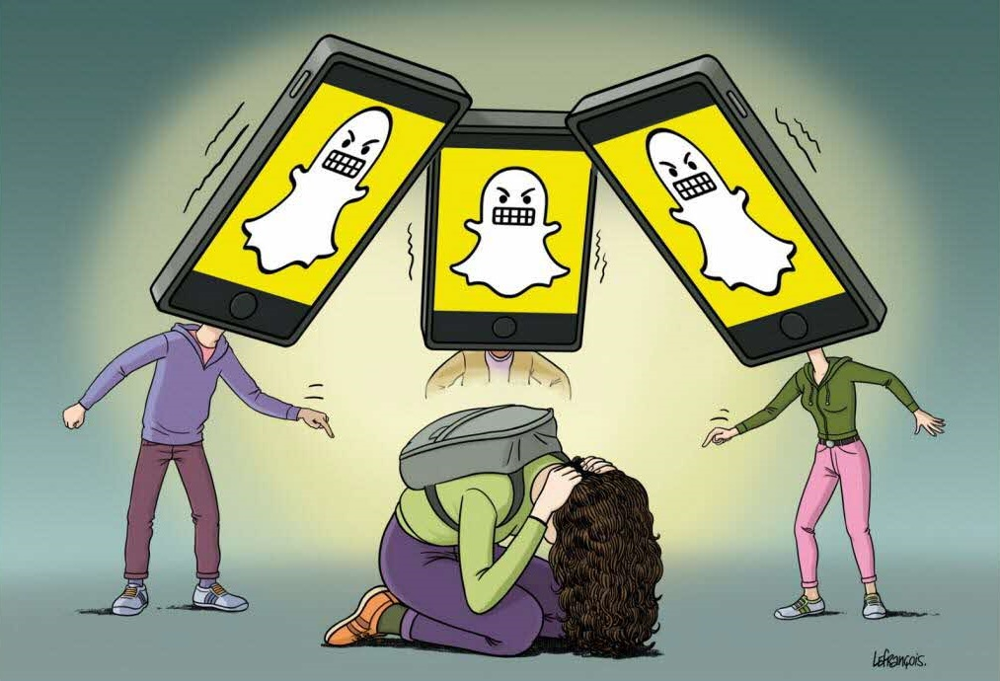

| Cyber Harcèlement |
| Cyber Harcèlement |
|  | Attention au Cyber Harcèlement |
Le harcèlement
Le harcèlement est la répétition de propos et de comportements ayant pour but ou effet une dégradation des conditions de vie de la victime.
Cela se traduit par des conséquences sur la personne harcelée :
Les acteurs
Multimédias facilites et accentue le harcèlment
Le multimédia peut favoriser le harcèlement, en fournissant des plateformes de diffusion de l'information anonyme et accessible de tous
Mais il est aussi utilisé pour sensibiliser et prévenir le harcèlement
La Loi
La reproduction d'une image sans l'accord de la personne concernée peut entraîner la responsabilité civile ou pénale de la personne ayant diffusé l'image. Il est interdit de publier une photo d'un camarade ou d'une personne sans son accord.
En cas de harcèlement moral, plusieurs types de sanctions peuvent se cumuler à l'encontre de l'auteur des faits :